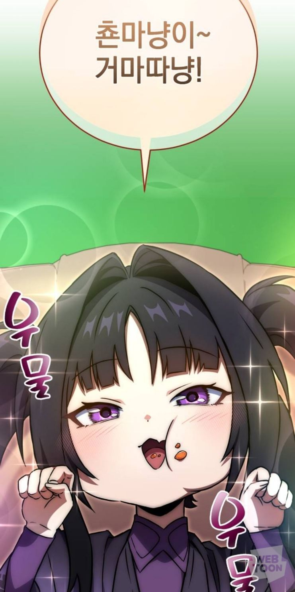

폐경 이후의 여고수가 반로환동에 성공한다면
전부 배출하고 없는 난자도 같이 재생이 되는 걸까?

폐경 이후의 여고수가 반로환동에 성공한다면
전부 배출하고 없는 난자도 같이 재생이 되는 걸까?
무당이 그 무당이 아니라 그 무당이었네 도장께선 내공이 얼마나 되시오
다시 생리도 하겠지
반로환동급의 고수가 달에 한 번씩 스트레스 부린다? 좆됨 진짜
이야..이렇게 보니까 소름돋네
ㅅㅂ 그렇겠네
될걸?
줄기세포로 돌아가는거임
쟤 남자임
이건.. 권위자들의 토론이 필요하겠군..
폐경이 와도 난자가 전부 배출된 건 아니다.
난자 개수는 태아?때부터 정해져서 안 될 거 같은데
아예 무공의 적합한 몸으로 새로 태어나는 개념 아닌가 그럼 리셋될거같음
반로환동하면 또 반로환동 가능?
세계관마다 다름
2000년대쯤 유행했던 무협세계관은 환골탈태시 치아나 치매같은 질병은 유지되는 설정이었음
2010년대 들어서면서 그런 부정적인 요소도 사라지는 경우가 있었고
2020년쯤 선협이 유행하면서 수위마다 수명자체가 늘어나는 무협세계관이 늘어남
옛날 무협은 강해져서 버틴다였는데 그래서 실력이 좋아도 노화 이슈로 지고 하는 경우가 있었고
지금은 수명이 늘어나서 거의 상시 전성기 유지 하는 설정들임
수명이 늘어나려면 아예 창조 수준으로 바뀌어야 하니까 간혹 캐릭터중에 배운 공법 따라서 환골탈태로 성별이 전환되는 경우도 표현되는거 보면 자궁이랑 난소도 재구성 되지 않을까
설정마다 다르긴 하지만
반로환동으로는 사실 설명하기 힘들지
환골탈태여야 말이 된다 생각함
누가 강소라누나한테 물어봐라
무림인들은 생리 안함
그나저나 천마냥이 재밌습니다 보세요
그딴게 왜 궁금한데요...
오우거가 환골탈퇴하여 인간이 된 케이스도 있으니 가능할듯
탈퇴는 임마
오타네 쏴리 ㅋㅋ
설정하기 나름임 탈모도 돌릴수있다는데 최근엔 탈모는 안되는거 나오더만 ㅋㅋ
설정이야 하기 나름인거지만
나는 복구까지는 안되는것이라고 봄
가장 흔하게 사용되는 무공의 발전 단계로 구분해 보면
하단전 ㅡ 중단전ㅡ 전신 세맥을 진기로 꽉 채울만큼 과포화 단계까지 이른 다음
상단전을 열어 천지와 통하면
이 깨달음을 기반으로 신체가 재구성 되는것임
그렇다면 신체 자체가 진기나 마찬가지라고 볼 수 있는데
환골탈태한 고수는 자기 신체 내부를 완벽하게 통제할 수 있다는 설정이 보통 붙음
이때부터 생리를 일부러 하진 않을테니 가지고 있는 난자는 보관까지만 가능한거고
이런 설정이면 보통 환골탈태할 정도의 고수는 폐경 이후에나 도달 가능하기때문에
남는 난자가 없어서 임신이 불가능한거고.
독공의 고수는 어릴때부터 독을 섭취해 난자가 이미 다 뒤저셔
임신을 하지 못한다는 설정도 연결이 가능함
영혼 비처녀
반로환동에서 결과값이 동童이므로 이 동이 무엇인가 보아야 함. 이 글자는 어린아이를 뜻하는 말로 본래 어린 남자 노예를 의미하는 것임. 그런데 상고한어에서 분파된 민어에서는 이 단어가 주술사, 샤먼의 의미가 됨. 즉 천지의 기운을 인간의 몸을 통해 그 위력을 드러내는 자가 되는데 이것은 곧 신선이라고도 할 수가 있음. 그렇다면 신선도 생식을 하느냐? 그렇다 신선도 당연히 생식을 하며 그 증거는 여러 전설에서 찾아 볼수가 있음. 나타태자가 탁탑천왕의 아들이며, 서왕모는 여러 딸들을 두었음. 선녀와 나무꾼의 선녀도 애를 낳음. 한상자는 아예 신선의 일가를 이룸. 그러므로 반로환동한 고수는 난자도 재생된다고 생각할 수 있음.